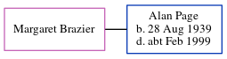

Margaret Brazier, the wife of Alan Stanley Page (the fourth cousin once-removed on the father's side of Nigel Horne), and married Alan in Folkestone, Kent, England around Aug 19671.
Citations
England & Wales Marriages 1837-2005 - Findmypast
Family Tree

Generated by ged2site. Last updated on Jun 11, 2024